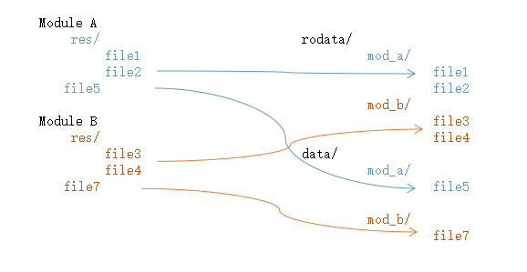

制作分区镜像
制作文件系统镜像时，需要将编译后的文件和资源打包成特定格式的镜像文件，以便烧录到目标设备上。制作文件系统镜像前，需要准备相应的资源文件。在 Luban Lite SDK
中，各模块可以通过配置 INSTALL 参数来指定需要安装的资源文件。这些资源文件会被复制到指定的目标目录中。
Luban-Lite SDK 在编译的最后阶段会自动制作所需要的文件系统镜像。如需独立制作文件系统镜像，可参照本节的镜像制作流程。
安装资源文件
-
安装各个模块所需的资源文件，以模块 A 和 B 为例：
以下是两个模块 A 和 B 的示例配置，如图所示：表 1. 模块 A 和 B 文件系统安装示例 模块 安装文件 文件系统安装路径 SConscript 中配置示例 模块 A res/file1
res/file2
rodata/mod_a/ install = [ ('res/', 'rodata/mod_a/'), ('file5', 'data/mod_a/file5') ] group = DefineGroup('Module A', src, depend = [], CPPPATH = CPPPATH, CLFAGS = cc_flags, INSTALL = install)file5 data/mod_a/file5 模块 B res/file3
res/file2
rodata/mod_b/ install = [ ('res/', 'rodata/mod_b/'), ('file7', 'data/mod_b/file7') ] group = DefineGroup('Module B', src, depend = [], CPPPATH = CPPPATH, CLFAGS = cc_flags, INSTALL = install)file7 data/mod_b/file7 INSTALL = install配置支持设置安装的源目录或文件，目标目录或文件。其中，源目录路径为该模块目录的相对路径，目标目录路径为编译输出的 images 目录的相对路径。在 SDK 编译的最后阶段，会执行 fsinstall.py 脚本，统一对上述的配置进行文件安装。注： 上述安装目标文件夹名称可以任意配置，并不仅限于使用 rodata 和 data。使用其他名称时，务必同步修改镜像打包配置中的文件名称。 -
将安装的目录打包成文件系统镜像，并完成烧录。
-
按照所需镜像类别，在 menuconfig 中配置系统镜像文件：
> Application options ---> [*] Using File System Image 0 ---> [*] Using File System Image 1 ---> -
配置
Data Directory参数。资源文件安装时，安装到了 images 下的指定文件夹，制作文件系统镜像时，也应该从对应的文件夹进行打包，生成镜像。 示例如下，从 images 目录下的 rodata/ 文件夹进行打包，生成 rodata.fatfs 文件系统镜像。> Application options ---> [*] Using File System Image 0 ---> Select File System Type (FATFS) ---> (rodata/) Data Directory (rodata.fatfs) Image Name [*] auto calcuate image size [*] using default volume lable
-
如果希望进行简单的文件复制安装操作，可以将文件存放在工程的主目录中，例如 target/d21x/demo128-nand/， 并添加安装命令到主目录的 SConscript 脚本中，例如 target/d21x/demo128-nand/SConscript。
制作 FATFS 镜像
-
确保编译主机上已经安装 Python3，并进入 Luban-Lite SDK 的根目录。
-
将需要打包的文件或文件夹，放到一个独立的文件夹内，例如：
- Linux: ~/fatfs_root/
- Windows: D:\fatfs_root\
-
根据资源文件大小制作镜像或制作指定大小的文件系统镜像。
-
如需根据资源文件大小制作镜像，则执行下列命令：Linux
python3 ./tools/scripts/makefatfs.py --auto --cluster 8 --sector 512 --tooldir ./tools/scripts/ --inputdir ~/fatfs_root/ --outfile mytest.fatfs
Windowspython tools\scripts\makefatfs.py --auto --cluster 8 --sector 512 --tooldir tools\scripts\ --inputdir D:\fatfs_root\ --outfile mytest.fatfs
-
如需制作指定大小的文件系统镜像，执行下列命令，以制作一个 100 MB 的 FATFS 镜像为例：Linux
python3 ./tools/scripts/makefatfs.py --raw --imgsize 104857600 --cluster 8 --sector 512 --tooldir ./tools/scripts/ --inputdir ~/fatfs_root/ --outfile mytest.fatfs
Windowspython tools\scripts\makefatfs.py --raw --imgsize 104857600 --cluster 8 --sector 512 --tooldir tools\scripts\ --inputdir D:\fatfs_root\ --outfile mytest.fatfs
与格式化指定大小的磁盘的操作类似，需要复制填充资源文件。
-
由于设置了 imgsize 为 100 MB，因此生成的镜像文件大小为 100 MB，可以将该镜像文件烧录到 100 MB 的磁盘分区。
-
如果实际资源大小不足 100 MB，工具会自动在镜像文件后面填充 0。如果不需要填充，可以去掉命令参数中的 --raw，此时生成的镜像文件仅保留必要数据部分。详细示例如下：Linux
python3 ./tools/scripts/makefatfs.py --imgsize 104857600 --cluster 8 --sector 512 --tooldir ./tools/scripts/ --inputdir ~/fatfs_root/ --outfile mytest.fatfs
Windowspython tools\scripts\makefatfs.py --imgsize 104857600 --cluster 8 --sector 512 --tooldir tools\scripts\ --inputdir D:\fatfs_root\ --outfile mytest.fatfs
-
-
FATFS 镜像格式说明
按照制作 FATFS 镜像的流程，会生成一个 FATFS 镜像，其格式取决于指定的镜像大小，详情如下：
| 文件系统 | 镜像大小 | 说明 |
|---|---|---|
| FAT12 | Size ≤ 16 MB | 生成 FAT12 文件系统镜像 |
| FAT16 | 16 MB < Size ≤ 256 MB | 生成 FAT16 文件系统镜像 |
| FAT32 | Size > 256 MB | 生成 FAT32 文件系统镜像 |
制作 LittleFS 镜像
-
确保编译主机上已经安装
Python3并进入 Luban-Lite SDK 的 tools/scripts/ 目录。 -
将需要打包的文件/文件夹，放到一个独立的文件夹内，例如：
- Linux: ~/littlefs_root/
- windows: \littlefs_root\
-
执行下列命令。Windows
python tools\scripts\makelittlefs.py --imgsize 10485760 --pagesize 256 --blocksize 4096 --tooldir tools\scripts\ --inputdir ~\littlefs_root\ --outfile mytest.lfsLinuxpython3 ./tools/scripts/makefatfs.py --auto --cluster 8 --sector 512 --tooldir ./tools/scripts/ --inputdir ~/fatfs_root/ --outfile mytest.fatfs